Manual Penggunaan SistemSPP
Panduan menjalankan seluruh menu, memeriksa hasil, dan menyelesaikan kendala sehari-hari.
Edisi 14 Oktober 2026
Panduan pengguna / HTML dan PDF
Untuk: Super Admin, Administrator, Kasir, dan Bendahara TU.
Contoh memakai data fiktif. Tarif resmi dan akun awal diberikan pengelola secara terpisah. Gunakan petunjuk sesuai peran serta unit Anda.
Daftar isi
Nomor halaman merujuk PDF edisi ini. Klik judul pada HTML atau PDF untuk menuju bab.
Mulai menggunakan aplikasi
Gunakan panduan ini berdasarkan pekerjaan yang akan dilakukan. Nama menu dan tombol dicetak tebal. Semua nama siswa, akun petugas, nominal, dan gambar di dalam panduan merupakan contoh, bukan data atau tarif resmi sekolah.
- Pastikan pengelola telah menyalakan server. Pada PC server, buka http://localhost/spp-management-system/. Pada PC petugas, gunakan alamat server yang diberikan pengelola, bukan localhost.
- Masukkan Username dan Password, lalu pilih Masuk. Gunakan akun sendiri; kredensial awal diberikan terpisah dari manual.
- Periksa nama akun, peran, dan unit. Buka menu dari sidebar. Pada ponsel, gunakan tombol menu untuk membuka navigasi.
- Pilih Mode Terang/Mode Gelap pada sidebar bila diperlukan. Tema hanya mengubah tampilan, bukan data.
- Setelah bekerja, pilih tombol keluar di bagian bawah sidebar. Tutup halaman yang memuat data siswa pada komputer bersama.
| Kebutuhan | Mulai dari |
|---|---|
| Menerima pembayaran sekolah | Input Pembayaran |
| Menabung atau menarik uang | Tabungan Masuk / Tabungan Keluar |
| Memeriksa tunggakan | Laporan Status Pembayaran |
| Menyiapkan tahun ajaran | Urutan persiapan tahun ajaran |
| Mencadangkan atau memulihkan | Backup / Pemulihan |
Jika login gagal, periksa ejaan username, tombol Caps Lock, dan status akun. Hubungi Super Admin untuk penggantian password; jangan mencoba akun petugas lain.
Peran, unit, dan hak tindakan
Menu dapat berbeda menurut akun. Tombol yang tidak tersedia bukan selalu kerusakan: peran, kepemilikan transaksi, status data, dan unit menentukan tindakan yang diizinkan.
| Menu / tindakan | Super Admin | Administrator | Kasir | Bendahara TU |
|---|---|---|---|---|
| Dashboard; Laporan Transaksi | Ya | Ya | Tidak | Ya |
| Input Pembayaran | Ya | Ya | Ya | Tidak |
| Riwayat Pembayaran / Daftar Ulang | Ya | Ya | Ya | Ya |
| Data Siswa dan semua master | Kelola | Kelola | Kelola | Tidak |
| Tabungan Masuk / Keluar | Ya | Ya | Ya | Tidak |
| Riwayat / Cetak Tabungan | Ya | Ya | Ya | Ya |
| Laporan Global dan Surat Laporan | Ya | Ya | Ya | Ya |
| Koreksi transaksi pembayaran | Langsung | Ajukan milik sendiri | Ajukan milik sendiri | Tidak |
| Setujui / tolak pengajuan | Ya | Tidak | Tidak | Tidak |
| Role Management; Backup & Restore | Ya | Tidak | Tidak | Tidak |
Unit operasional
Administrator, Kasir, dan Bendahara TU mengikuti unit akunnya. Super Admin memilih SD, SMP, atau SMA sebelum memasukkan atau mengubah data. Semua Unit pada modul operasional merupakan cakupan baca; pilih satu unit sebelum transaksi atau perubahan. Pengelolaan akun dan backup memiliki aturan khusus pada babnya.
Unit Laporan
Pada Laporan Global, keempat peran dapat memilih SD, SMP, SMA, atau Semua Unit untuk membaca laporan. Pilihan ini tidak mengubah unit operasional atau membuka hak transaksi unit lain. Periksa kolom Unit ketika hasil digabung.
Kepemilikan pembayaran
Super Admin dapat mengedit, menghapus, dan mencetak transaksi sesuai cakupan. Administrator/Kasir dapat mengajukan koreksi serta mencetak transaksi yang terbukti miliknya. Bendahara TU membaca dan hanya mencetak transaksi miliknya. Transaksi petugas lain tetap dapat diperiksa dalam unit, tetapi tindakan dibatasi. Pembuat tidak tercatat memerlukan Super Admin.
Pencarian, filter, dan istilah
- Ketik nama, NIS, atau NIS Diknas pada pencarian yang tersedia. Pada pilihan siswa, klik hasil yang benar agar identitas terisi; mengetik saja belum memilih siswa.
- Untuk dropdown checkbox, centang satu atau beberapa opsi, pilih Terapkan, lalu tekan Tampilkan Rekap jika tersedia. Pilihan sebelum diterapkan belum menjadi hasil aktif.
- Gunakan Baris/Halaman atau Siswa/Halaman dan pagination untuk memindah tampilan. Reset mengembalikan filter/isian awal; bukan menghapus data tersimpan.
- Baca unit, periode, dan status pada hasil. Pada tabel lebar, geser batang gulir horizontal sampai kolom terakhir. Identitas tertentu tetap terlihat.
| Istilah | Arti praktis |
|---|---|
| NIS / NIS Diknas | NIS adalah nomor penghubung data siswa di aplikasi. NIS Diknas adalah identitas tambahan; jangan menukar keduanya. |
| Tanggal Bayar / Transaksi | Hari penerimaan uang atau mutasi dicatat. Bisa berbeda dari bulan kewajiban. |
| Periode Tagihan | Bulan/tahun atau tahun ajaran kewajiban yang dilunasi. Tahun ajaran berjalan Juli–Juni. |
| Tagihan / Terbayar / Sisa | Kewajiban, pembayaran yang diakui untuk kewajiban tersebut, dan bagian yang belum dibayar. |
| — / Rp0 / Tidak Ditagihkan | Tidak ada hasil pada sel, nilai nol, dan kewajiban tidak ditagihkan adalah keadaan berbeda. |
| Subtotal / Total | Subtotal merujuk kelompok terkait; total laporan mengikuti seluruh hasil filter, bukan hanya halaman yang terlihat. Baca label sebelum menjumlahkan. |
Gunakan Tab untuk berpindah kontrol, Enter untuk tindakan yang dipilih, dan Escape untuk menutup dialog/dropdown yang mendukungnya. Kesalahan validasi perlu diperbaiki sebelum menyimpan ulang.
Dashboard
Membaca ringkasan pembayaran, tabungan, dan arus kas pada periode yang ditampilkan.
Pengguna: Super Admin, Administrator, dan Bendahara TU.

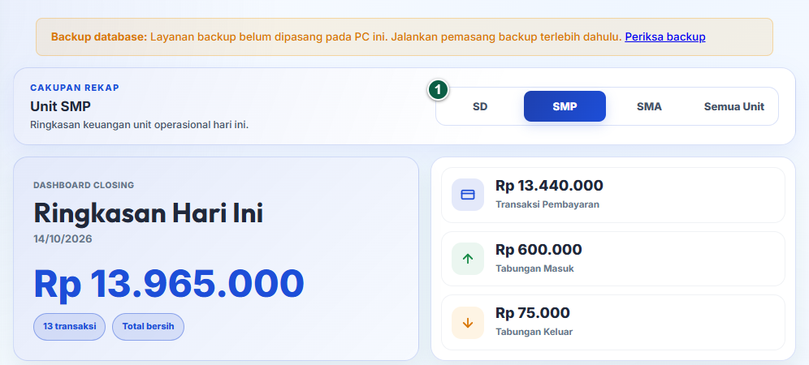
Sebelum mulai
Pastikan tanggal serta cakupan unit sesuai kas yang diperiksa.
Langkah penggunaan
- Buka Dashboard dan baca tanggal ringkasan.
- Periksa pembayaran, tabungan masuk, dan tabungan keluar secara terpisah.
- Gunakan pintasan pembayaran, tabungan, laporan, atau ekspor yang tersedia untuk menelusuri sumber angka.
- Cocokkan ringkasan dengan Rekap Penerimaan Harian dan laporan kas pada tanggal/unit yang sama.
Hasil yang diperiksa
Angka pembayaran tidak tertukar dengan saldo tabungan. Cocokkan juga metode tunai/non-tunai sebelum menghitung uang fisik.
Jika mengalami kendala
Jika ada selisih, samakan tanggal/unit/operator; periksa transaksi yang telah diubah atau dihapus. Status backup di dashboard menjelaskan layanan backup, bukan keberhasilan transaksi.
Data Siswa
Menambah identitas siswa, memeriksa penempatan, serta mengatur biaya dan potongan yang berlaku.
Pengguna: Super Admin, Administrator, dan Kasir pada satu unit.

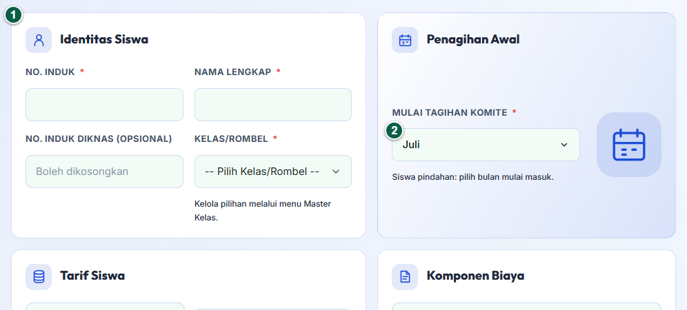
Sebelum mulai
Siapkan NIS, nama, NIS Diknas bila ada, kelas/rombel, tahun ajaran, dan nominal yang sudah disetujui. Pastikan master kelas/tarif tersedia.
Langkah penggunaan
- Buka Data Siswa. Cari NIS/nama lebih dahulu agar tidak membuat siswa ganda.
- Isi identitas, tahun ajaran dan kelas/rombel aktif. Tentukan Mulai Tagihan Komite sesuai ketentuan siswa.
- Periksa informasi SPP dari master; isi komponen biaya yang tersedia, termasuk PSB, Komite, Daftar Ulang, dan potongan. Potongan SPP memakai rupiah per bulan.
- Periksa hasil perhitungan yang ditampilkan, lalu simpan. Gunakan Edit pada daftar untuk perubahan siswa yang sudah ada.
Hasil yang diperiksa
Nama/NIS/unit/rombel benar; tarif dan potongan tidak melebihi ketentuan. Menyimpan siswa tidak berarti semua tagihan SPP/Daftar Ulang sudah terbit; periksa master penerbitannya.
Jika mengalami kendala
NIS siswa yang sudah dibuat tidak dapat diedit dari formulir biasa. Jika rombel tidak muncul, periksa unit dan status rombel. Jika potongan SPP ditolak, siapkan tarif master dahulu.
Riwayat kelas, arsip, dan pemulihan siswa
Menjaga penempatan dan status siswa tanpa menghapus histori keuangan.
Pengguna: Super Admin, Administrator, dan Kasir pada satu unit.
Sebelum mulai
Cari siswa yang tepat dan pastikan apakah perubahan merupakan koreksi rombel, kenaikan kelas, kelulusan, atau keluar sekolah.
Langkah penggunaan
- Periksa penempatan dan tahun ajaran pada Data Siswa. Gunakan Master Kelas/Rombel untuk kenaikan resmi dan kelulusan.
- Untuk siswa keluar yang bukan proses kelulusan, gunakan Arsipkan dan baca konfirmasinya.
- Gunakan filter Arsip/Lulus untuk melihat siswa nonaktif. Jika tindakan Pulihkan tersedia, periksa kembali penempatan sebelum mengaktifkan.
- Untuk siswa Legacy, gunakan Aktifkan & Tempatkan, bukan pemulihan/edit biasa.
- Jika siswa keluar masih memiliki tagihan SPP belum bayar, tindak lanjut melalui pembatalan tagihan pada tab Status Tahun SPP; pengarsipan dan pembatalan adalah tindakan berbeda.
Hasil yang diperiksa
Status dan kelas aktif sesuai keadaan sebenarnya. Laporan historis tetap menggunakan kelas/periode yang tersimpan; pembayaran lama tidak dipindahkan ke kelas baru.
Jika mengalami kendala
Siswa lulus tidak dipulihkan melalui tombol arsip biasa. Jika penempatan bertentangan atau siswa sudah diproses, hubungi pengelola; jangan membuat siswa baru untuk menghindari validasi.
Import Legacy dan aktivasi siswa
Memindahkan identitas siswa dari backup SQL Server lama, lalu menetapkan data operasional baru secara terpisah.
Pengguna: Super Admin untuk impor; pengelola Data Siswa yang berhak untuk aktivasi pada unitnya.

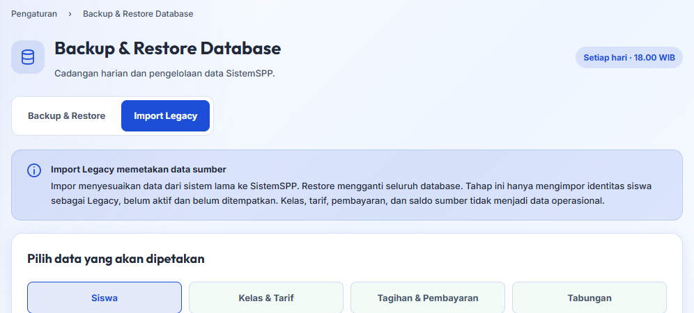
Sebelum mulai
Gunakan file .dat yang sesuai, maksimal 100 MiB, dan pilih satu unit. Pengelola harus menyiapkan worker Legacy/SQL Server LocalDB pada server.
Langkah penggunaan
- Buka Backup & Restore → Import Legacy. Pilih file, pastikan unit sumber sesuai unit aktif, dan gunakan kategori Siswa yang tersedia untuk dipetakan.
- Mulai pemeriksaan. Baca pratinjau serta hasil per baris; unduh rincian masalah bila tersedia.
- Hanya setelah pemetaan benar, ketik IMPOR LEGACY dan pilih Impor Identitas Legacy. Menutup dialog tidak membatalkan pekerjaan; gunakan Batalkan Pekerjaan bila perlu.
- Buka Data Siswa, filter Legacy, lalu pilih Aktifkan & Tempatkan.
- Pilih rombel aktif dan tahun ajaran yang dikonfirmasi. Periksa SPP dari master serta biaya lainnya, centang konfirmasi, lalu simpan aktivasi.
Hasil yang diperiksa
Siswa hasil impor mula-mula berstatus Legacy. Aktivasi membentuk awal penempatan; tidak otomatis membuat tagihan atau rekening tabungan. Tarif sumber hanya informasi dan harus diperiksa kembali.
Jika mengalami kendala
File .dat berbeda dari SQL cadangan SistemSPP. Jika layanan Legacy belum siap atau baris ditolak, gunakan rincian masalah dan hubungi pengelola; jangan memakai Restore Database untuk mengimpor identitas.
Master Kelas/Rombel
Mengelola tingkat, rombel aktif, serta ketersediaan kelas tujuan siswa.
Pengguna: Super Admin, Administrator, dan Kasir pada satu unit.

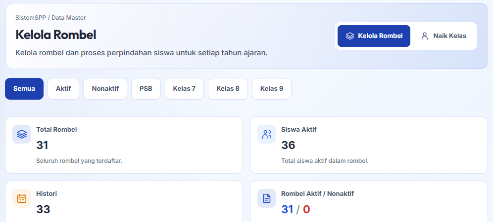
Sebelum mulai
Pilih satu unit. SD memakai tingkat 1–6, SMP 7–9, dan SMA 10–12; PSB memiliki perlakuan khusus.
Langkah penggunaan
- Buka Master Kelas/Rombel. Gunakan Filter & Pencarian untuk mempersempit daftar.
- Buka kelompok tingkat untuk melihat rombel. Tambahkan atau edit rombel sesuai formulir yang tersedia.
- Periksa jumlah siswa dan status sebelum Nonaktifkan. Rombel yang dilindungi atau dipakai tidak boleh dipaksa dihapus.
- Untuk tindakan massal, baca konfirmasi Aktifkan Semua Rombel atau Nonaktifkan Rombel Kosong. Tindakan kedua hanya menonaktifkan rombel yang memenuhi syarat, bukan semua rombel.
Hasil yang diperiksa
Rombel yang diperlukan aktif dan muncul pada pilihan siswa. Jumlah siswa tetap sesuai penempatan.
Jika mengalami kendala
Rombel PSB, placeholder, histori, atau rombel dengan siswa aktif dapat dilindungi. Jika pilihan tidak muncul pada form siswa, periksa unit/tingkat/status.
Menempatkan siswa PSB ke kelas reguler
Menetapkan siswa PSB ke tingkat pertama unit pada tahun ajaran berjalan yang ditampilkan. Tahun penempatan PSB tidak diubah dari pemilih tahun asal siswa reguler.
Pengguna: Super Admin, Administrator, dan Kasir pada satu unit.

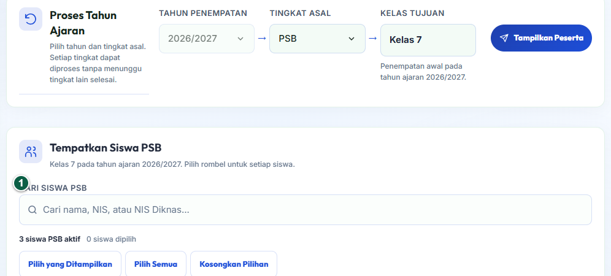
Sebelum mulai
Pastikan siswa PSB aktif, rombel tujuan tersedia, dan tahun tujuan benar. Penempatan PSB berbeda dari kenaikan siswa reguler.
Langkah penggunaan
- Buka Master Kelas/Rombel → Naik Kelas. Pilih tingkat asal PSB untuk membuka Tempatkan Siswa PSB.
- Cari siswa, centang penerima penempatan, dan pilih rombel tujuan masing-masing. Tujuan berada pada tingkat pertama unit: SD 1, SMP 7, SMA 10.
- Periksa jumlah pilihan dan tahun ajaran. Gunakan tindakan penempatan yang tersedia, baca konfirmasi, lalu terapkan.
- Periksa kelas aktif siswa dan penempatannya. Lanjutkan pemeriksaan tarif serta penerbitan tagihan melalui master.
Hasil yang diperiksa
Siswa berpindah dari PSB ke kelas reguler yang ditetapkan tanpa menggandakan identitas. Riwayat PSB/pembayarannya tetap dapat ditelusuri.
Jika mengalami kendala
Jika siswa atau rombel tidak tersedia, periksa status aktif, unit, tahun, penempatan yang sudah ada, dan kesiapan rombel.
Kenaikan kelas dan kelulusan
Memindahkan siswa secara resmi ke satu tingkat berikutnya, atau meluluskan siswa tingkat akhir.
Pengguna: Super Admin, Administrator, dan Kasir pada satu unit.

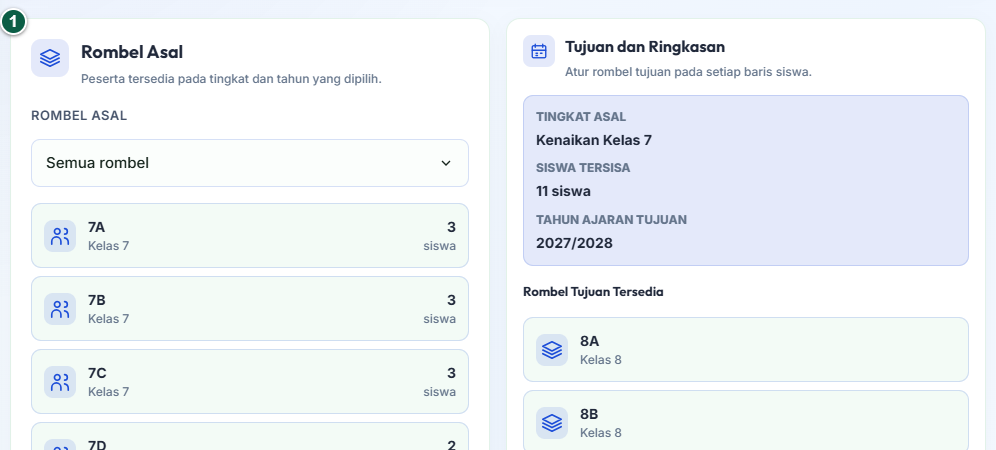
Sebelum mulai
Periksa tahun dan penempatan asal, rombel tujuan aktif, serta tarif tahun tujuan. Proses ini mengubah kelas aktif siswa.
Langkah penggunaan
- Pada Master Kelas/Rombel, buka tab Naik Kelas. Pilih tahun asal, tingkat asal, dan rombel bila perlu.
- Periksa peserta yang memenuhi syarat. Tingkat dapat diproses tanpa harus meluluskan tingkat tertinggi lebih dahulu.
- Centang siswa dan tentukan rombel tujuan masing-masing. Tujuan kenaikan tepat satu tingkat pada tahun berikutnya; tingkat terakhir memakai kelulusan.
- Baca konfirmasi tahun asal/tujuan dan daftar siswa, lalu tekan tindakan Naikkan atau Luluskan.
- Periksa hasil per siswa. Selanjutnya siapkan tarif/penerbitan SPP dan Daftar Ulang pada tahun tujuan.
Hasil yang diperiksa
Kenaikan membentuk penempatan tujuan dan mengubah kelas aktif. Kelulusan mengarsipkan siswa sebagai lulusan; histori asal tetap ada.
Jika mengalami kendala
Siswa yang sudah diproses, Legacy, PSB, arsip, atau memiliki penempatan bertentangan ditahan. Tahun mendatang belum dapat menjadi asal sebelum waktunya. Jika tarif tujuan belum tersedia, jangan menafsirkan angka nol sebagai tarif resmi.
Penerbitan SPP: Tarif SPP
Menetapkan tarif dasar per tingkat pada tahun ajaran yang dipilih.
Pengguna: Super Admin, Administrator, dan Kasir pada satu unit.

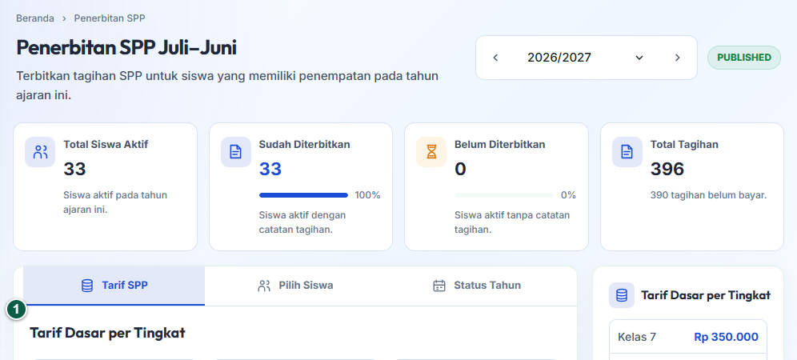
Sebelum mulai
Pilih tahun ajaran yang benar dan pastikan penempatan siswa tersedia. SPP dibentuk untuk Juli sampai Juni.
Langkah penggunaan
- Buka Master Penerbitan SPP, pilih tahun ajaran, lalu tab Tarif SPP.
- Untuk draft, isi tarif setiap tingkat dan pilih Simpan Tarif. Periksa dialog konfirmasi sebelum menyimpan.
- Untuk tahun yang sudah terbit, gunakan Edit Tarif, ubah nominal, lalu Simpan Perubahan Tarif. Batalkan mengabaikan perubahan yang belum disimpan.
- Baca jumlah tagihan yang akan diperbarui/dipertahankan. Muat ulang jika formulir ditolak karena tarif/status telah berubah.
Hasil yang diperiksa
Tarif dasar per tingkat dan tahun benar. Koreksi terbit hanya memperbarui tagihan yang memenuhi syarat dan belum dibayar; tagihan berbayar, dibatalkan, atau ditanggung PSB dipertahankan.
Jika mengalami kendala
Tahun tertutup perlu dibuka kembali sebelum mengubah tarif. Potongan dan histori pembayaran bukan alasan untuk menulis ulang tagihan berbayar.
Penerbitan SPP: Pilih Siswa
Menerbitkan tagihan SPP untuk siswa dengan penempatan pada tahun ajaran tersebut.
Pengguna: Super Admin, Administrator, dan Kasir pada satu unit.

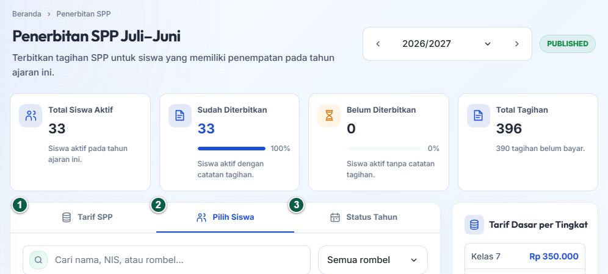
Sebelum mulai
Tarif dasar, potongan, unit, tahun, dan rombel harus sudah benar.
Langkah penggunaan
- Buka tab Pilih Siswa. Gunakan pencarian serta filter rombel.
- Centang siswa yang akan diterbitkan. Pilih yang Ditampilkan memilih hasil tampilan saat ini; periksa jumlah pilihan. Kosongkan membatalkan pilihan.
- Periksa status baris dan tarif. Tekan Terbitkan SPP, lalu baca konfirmasi tarif/tunggakan yang muncul.
- Setelah berhasil, buka Laporan Status Pembayaran atau Rekap SPP Tahun Ajaran per Kelas pada tahun yang sama.
Hasil yang diperiksa
Jumlah siswa dipilih sesuai sasaran; tagihan Juli–Juni tersedia sesuai keadaan siswa. Pengiriman ulang tidak dimaksudkan untuk membuat tagihan ganda.
Jika mengalami kendala
Siswa tanpa penempatan pada tahun terpilih tidak dapat diterbitkan. Jika siswa hilang dari daftar, periksa tahun, rombel, status siswa, dan penempatan.
Penerbitan SPP: Status Tahun
Mengelola penutupan/pembukaan tahun SPP dan membatalkan tagihan yang memenuhi syarat untuk siswa keluar.
Pengguna: Super Admin, Administrator, dan Kasir pada satu unit.
Sebelum mulai
Pastikan tahun yang dipilih dan alasan tindakan. Penutupan SPP berbeda dari pengelolaan tahun Daftar Ulang.
Langkah penggunaan
- Buka tab Status Tahun atau panel status di sidebar halaman SPP.
- Gunakan tindakan tutup/buka kembali yang tersedia, kemudian baca konfirmasi. Tahun tertutup mengunci penerbitan/koreksi tarif; tunggakan yang sah tetap dapat dibayar.
- Untuk siswa keluar, arsipkan siswa lebih dahulu di Data Siswa. Pilih siswa dan bulan efektif pada Batalkan Tagihan Siswa Keluar.
- Tekan Batalkan Tagihan Belum Bayar dan periksa hasil serta laporan siswa tersebut.
Hasil yang diperiksa
Hanya tahun dan tagihan yang dimaksud berubah. Tagihan yang pernah menerima alokasi pembayaran tetap dilindungi.
Jika mengalami kendala
Jika tindakan ditolak, periksa status tahun, arsip siswa, bulan efektif, dan pembayaran yang sudah melekat. Jangan menghapus pembayaran hanya agar pembatalan dapat dijalankan.
Master Biaya Lain
Membuat jenis biaya dan menerbitkan kewajiban kepada siswa sasaran.
Pengguna: Super Admin, Administrator, dan Kasir pada satu unit.

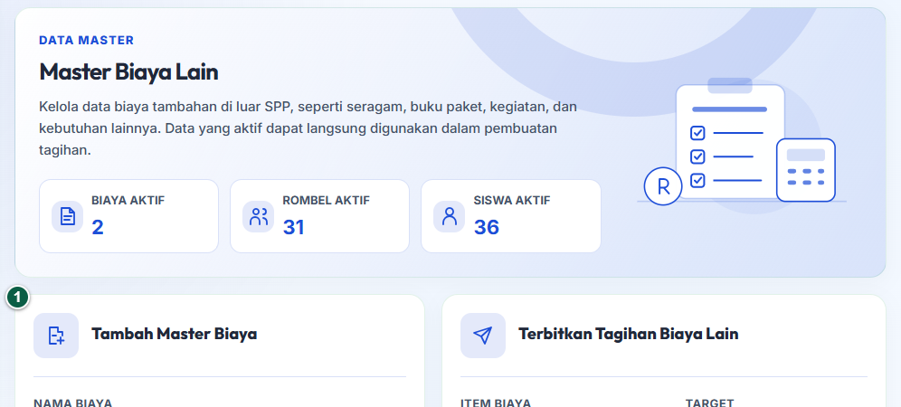
Sebelum mulai
Siapkan nama biaya, nominal, dan daftar penerima yang disetujui.
Langkah penggunaan
- Buka Master Biaya Lain, isi nama/nominal dan status aktif, lalu Tambah Biaya.
- Pada penerbitan, pilih item biaya serta sasaran sesuai kontrol yang tersedia.
- Jika memilih siswa tertentu, cari nama/NIS, centang siswa, lalu periksa jumlah terpilih. Pilih yang tampil dan Bersihkan pilihan membantu mengatur penerima.
- Cocokkan Pratinjau Siswa dan Total Nominal, kemudian jalankan penerbitan dan baca konfirmasi.
- Gunakan daftar biaya untuk mengedit nominal/status. Biaya nonaktif tidak tersedia untuk penerbitan baru sesuai aturan halaman.
Hasil yang diperiksa
Jenis biaya dan tagihan penerima benar. Menambah master saja belum menerbitkan tagihan. Perubahan master tidak boleh dianggap mengubah seluruh histori pembayaran.
Jika mengalami kendala
Jika total nol, periksa item, nominal, dan penerima. Penerbitan yang ditolak perlu diperiksa pada status/riwayat item sebelum dicoba ulang.
Master Daftar Ulang
Menyiapkan tarif dan menerbitkan tagihan tahunan Daftar Ulang.
Pengguna: Super Admin, Administrator, dan Kasir pada satu unit.

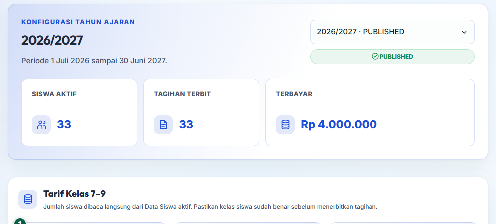
Sebelum mulai
Pastikan tahun ajaran, kelas aktif, tarif per tingkat, dan siswa sasaran benar.
Langkah penggunaan
- Buka Master Daftar Ulang, pilih tahun ajaran.
- Isi tarif per kelas dan baca estimasi jumlah siswa × tarif. Estimasi bukan penerimaan uang.
- Pada draft, pilih Simpan & Terbitkan Tagihan. Setelah terbit, perubahan memakai Simpan Perubahan Tarif sesuai perlindungan histori.
- Periksa ringkasan tagihan terbit dan terbayar. Gunakan Riwayat Daftar Ulang untuk melihat cicilan dan sisa.
- Gunakan Tutup Tahun Ajaran setelah pemeriksaan selesai; Buka Kembali tersedia bila koreksi memang diperlukan.
Hasil yang diperiksa
Tahun, tarif, jumlah tagihan, dan total kewajiban sesuai sasaran. Tunggakan tetap dapat dibayar setelah tahun ditutup.
Jika mengalami kendala
Jika tarif terkunci, periksa status tahun. Jika jumlah siswa tidak sesuai, periksa unit/kelas dan status aktif sebelum menerbitkan.
Input Pembayaran
Mencatat uang yang diterima untuk kewajiban sekolah siswa.
Pengguna: Super Admin, Administrator, dan Kasir pada satu unit.

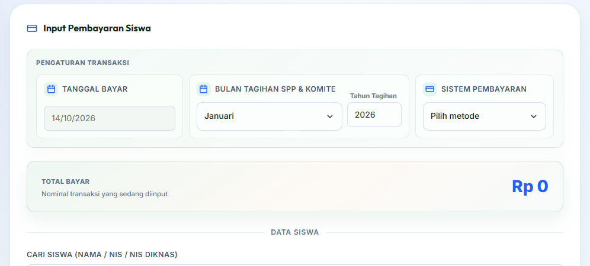
Sebelum mulai
Pastikan siswa dan kewajiban sudah tersedia. Siapkan bukti penerimaan, metode, nominal, serta periode tagihan.
Langkah penggunaan
- Buka Input Pembayaran. Cari siswa dengan nama/NIS/NIS Diknas dan klik hasilnya. Periksa identitas/unit/kelas.
- Pilih komponen pembayaran, periode tagihan yang benar, dan metode pembayaran sesuai uang yang diterima. Tanggal Bayar merupakan hari penerimaan, bukan bulan kewajiban.
- Isi nominal sesuai sisa tagihan. Periksa potongan dan total; jangan memakai nominal perkiraan ketika tagihan belum tersedia.
- Baca ringkasan/konfirmasi, lalu simpan satu kali. Tunggu hasil sebelum mengirim ulang.
- Periksa transaksi di Riwayat Pembayaran dan gunakan cetak bukti bila tindakan tersedia.
Hasil yang diperiksa
Transaksi tersimpan untuk siswa/periode/metode yang benar. Total pada bukti sesuai uang yang diterima. Pembayaran tabungan dicatat melalui menu tabungan, bukan komponen sekolah.
Jika mengalami kendala
Jika penyimpanan ditolak, baca alasan: periode lama belum lunas, nominal tidak sesuai, tagihan belum terbit, atau data telah berubah. Periksa riwayat sebelum mencoba kembali.
Aturan pembayaran per komponen
| Komponen | Cara membayar dan memeriksa |
|---|---|
| SPP | Satu transaksi melunasi satu bulan. Nominal harus tepat sebesar sisa tagihan bulanan; kurang/lebih ditolak. Selesaikan tunggakan lebih tua terlebih dahulu. |
| SPP dan Komite | Jika keduanya terutang pada bulan yang sama, keduanya wajib dilunasi bersama. Komite dapat dibayar sendiri sesuai kondisi SPP yang diizinkan, misalnya SPP sudah lunas atau belum ditagihkan. |
| Daftar Ulang | Pilih Tahun Ajaran pada kontrol Daftar Ulang. Dapat dicicil sampai sisa kewajiban; tahun/kelas mengikuti tagihan yang dipilih. Penanda ! menunjukkan tunggakan tahun sebelumnya. |
| PSB | Kewajiban sekali bayar, termasuk Pangkal yang sudah digabung. Cicilan mengikuti sisa kewajiban; jangan membuat komponen Pangkal terpisah. |
| Biaya Lain | Pilih tagihan dari item yang sudah diterbitkan kepada siswa. Periksa nama item dan sisa masing-masing. |
Contoh periode berbeda
Siswa membayar pada 14 Oktober 2026 untuk kewajiban September 2026. Tanggal Bayar tetap 14 Oktober; bulan tagihan tetap September. Penerimaan Harian melihat tanggal uang diterima, sedangkan Status Pembayaran melihat kewajiban September.
Pembayaran tahun tujuan
Pembayaran lebih awal pada tahun tujuan memerlukan kenaikan resmi, penempatan tujuan, dan tagihan yang sudah diterbitkan. Tunggakan yang lebih tua tetap didahulukan. Baca konfirmasi periode mendatang jika muncul.
Periksa sebelum mengulang
Jika respons lambat atau koneksi terputus, cari transaksi pada riwayat terlebih dahulu. Jangan membuat penerimaan kedua untuk uang yang sama.
Riwayat Pembayaran
Mencari transaksi, memeriksa detail dan aktivitas, mencetak bukti, atau memulai koreksi sesuai hak.
Pengguna: Super Admin, Administrator, Kasir, dan Bendahara TU; tindakan mengikuti hak akun.

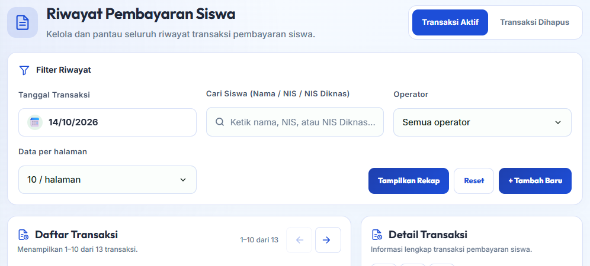
Sebelum mulai
Siapkan nama/NIS, tanggal, operator, atau nomor transaksi. Periksa tab transaksi aktif atau dihapus.
Langkah penggunaan
- Buka Riwayat Pembayaran, atur filter dan Operator bila perlu, lalu Tampilkan Rekap. Filter Operator mengacu pembuat awal, bukan petugas yang terakhir mengedit.
- Pilih transaksi/kartu untuk melihat detail. Cocokkan siswa, komponen, periode, tanggal/waktu, metode, total, dan pembuat.
- Gunakan Riwayat Aktivitas untuk menelusuri perubahan. Cetak tersedia menurut kepemilikan dan peran; kelompok 12 Struk juga mengikuti hak setiap transaksi.
- Super Admin melakukan edit/hapus langsung; Administrator/Kasir menggunakan Ajukan Perubahan atau Ajukan Hapus dengan alasan pada transaksi miliknya.
- Pada tab Dihapus, baca snapshot dan aktivitas; transaksi dihapus tidak dapat diedit, dicetak, atau dipulihkan dari tab ini.
Hasil yang diperiksa
Bukti transaksi cocok dengan uang dan kewajiban. Pengajuan belum mengubah pembayaran sampai disetujui. Riwayat penghapusan tetap dapat ditelusuri.
Jika mengalami kendala
Jika tindakan terkunci, baca alasan kepemilikan, batas transaksi, pengajuan yang menunggu, atau cakupan unit. Pada tab Dihapus, filter tanggal merujuk tanggal penghapusan.
Riwayat Daftar Ulang
Memeriksa tagihan tahunan siswa beserta setiap cicilan Daftar Ulang.
Pengguna: Super Admin, Administrator, Kasir, dan Bendahara TU; tindakan mengikuti hak akun.

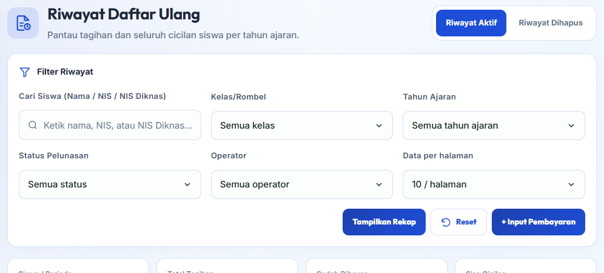
Sebelum mulai
Pilih tahun ajaran dan status siswa/tagihan yang ingin diperiksa.
Langkah penggunaan
- Buka Riwayat Daftar Ulang, atur pencarian, kelas/rombel, tahun, status pelunasan, siswa dan operator sesuai kebutuhan.
- Tekan Tampilkan Rekap, lalu pilih siswa/periode untuk melihat rincian cicilan.
- Baca Tagihan, Terbayar, Sisa dan status. Pada transaksi campuran, bedakan nominal Daftar Ulang dari total transaksi utuh.
- Jika Operator dipilih, rincian/pembayaran operator terpilih disaring, tetapi sisa/status kewajiban tetap menghitung seluruh pembayaran siswa pada periode itu.
- Gunakan tindakan cetak/koreksi yang tersedia. Baca tab Dihapus untuk histori; tidak ada cetak atau pemulihan transaksi terhapus.
Hasil yang diperiksa
Tahun/kelas historis dan nilai cicilan benar. Jangan menjumlahkan total transaksi campuran sebagai pembayaran Daftar Ulang.
Jika mengalami kendala
Tagihan tanpa pembayaran dapat tampil saat semua operator dipilih. Jika filter operator aktif, hasil memerlukan pembayaran operator tersebut. Longgarkan filter bila siswa tidak muncul.
Otorisasi, Pengajuan Saya, dan Riwayat Otorisasi
Memantau pengajuan edit/hapus dan jejak keputusan tanpa kehilangan rincian transaksi asal.
Pengguna: Super Admin, Administrator, Kasir, dan Bendahara TU; tindakan mengikuti hak akun.

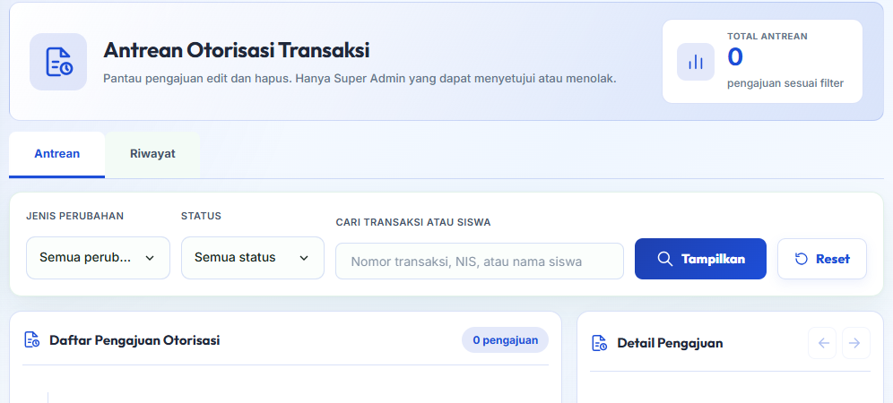
Sebelum mulai
Pengajuan dibuat dari transaksi milik Administrator/Kasir dengan alasan yang jelas. Hanya Super Admin memutuskan.
Langkah penggunaan
- Buka menu yang tampil pada akun: Otorisasi Transaksi, Pengajuan Saya, atau Riwayat Otorisasi.
- Pada Antrean, pilih pengajuan dan baca data lama, usulan, pemohon, serta alasan.
- Super Admin memilih satu unit untuk Setujui atau Tolak; catatan penolakan wajib diisi. Pemohon dapat membatalkan pengajuan sendiri yang masih menunggu.
- Pada Riwayat, buka Lihat Riwayat Lengkap untuk membaca kronologi sebelum/usulan/sesudah.
- Khusus Super Admin, centang transaksi lintas halaman untuk Cetak Terpilih, atau Cetak Semua Hasil Filter. Mengganti filter/unit menghapus pilihan cetak.
Hasil yang diperiksa
Status keputusan dan perubahan nyata sesuai hasil persetujuan. Jumlah hasil menghitung transaksi, bukan jumlah kejadian pada timeline.
Jika mengalami kendala
Bendahara membaca tanpa memberi keputusan; Administrator juga tidak menyetujui pengajuan. Jika data berubah sejak pengajuan, periksa ulang alasan penolakan sistem sebelum membuat usulan baru.
Tabungan Masuk
Mencatat setoran uang milik siswa ke saldo tabungan.
Pengguna: Super Admin, Administrator, dan Kasir pada satu unit.

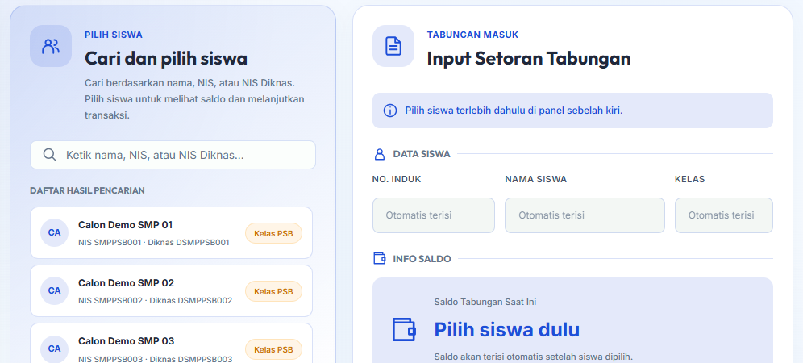
Sebelum mulai
Siapkan uang yang diterima dan pilih siswa pada unit yang benar.
Langkah penggunaan
- Buka Tabungan Masuk. Cari siswa dan klik hasil pencarian.
- Cocokkan NIS/nama/kelas dan saldo yang terisi otomatis.
- Periksa tanggal yang ditampilkan; isi Nominal Masuk (Rp) dan keterangan bila diperlukan.
- Simpan dan tunggu konfirmasi. Periksa saldo baru serta mutasi di Riwayat Tabungan; cetak buku jika diperlukan.
Hasil yang diperiksa
Saldo awal Rp100.000 ditambah setoran Rp20.000 menjadi Rp120.000. Setoran membentuk baris mutasi baru, bukan mengganti baris lama.
Jika mengalami kendala
Jika saldo belum tersedia, tunggu pemilihan siswa selesai atau pilih ulang; jangan menyimpan berdasarkan perkiraan. Tabungan bukan penerimaan komponen SPP/Komite.
Tabungan Keluar
Mencatat penarikan tabungan yang diberikan kepada siswa.
Pengguna: Super Admin, Administrator, dan Kasir pada satu unit.

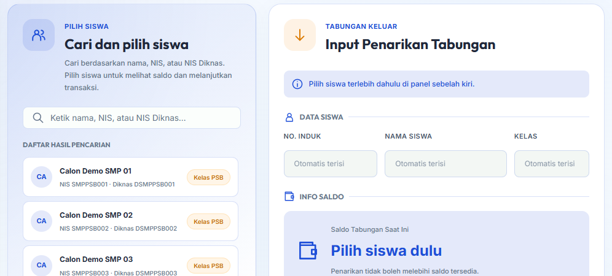
Sebelum mulai
Pastikan siswa, saldo tersedia, nominal penarikan, dan penyerahan uang telah benar.
Langkah penggunaan
- Buka Tabungan Keluar, cari dan pilih siswa.
- Periksa identitas dan saldo saat ini. Nominal penarikan tidak boleh melebihi saldo.
- Periksa tanggal yang ditampilkan, isi Nominal Keluar (Rp) dan keterangan.
- Simpan, tunggu hasil, lalu periksa saldo dan mutasi. Buka buku tabungan untuk bukti jika diperlukan.
Hasil yang diperiksa
Saldo Rp120.000 dikurangi penarikan Rp30.000 menjadi Rp90.000. Nominal keluar tercatat pada siswa yang benar.
Jika mengalami kendala
Jika saldo berubah karena transaksi lain, periksa ulang sebelum mengirim. Penarikan berlebih ditolak; jangan mengubah angka saldo secara manual.
Riwayat Tabungan
Menelusuri setoran/penarikan, operator, dan bukti transaksi siswa.
Pengguna: Super Admin, Administrator, Kasir, dan Bendahara TU; tindakan mengikuti hak akun.

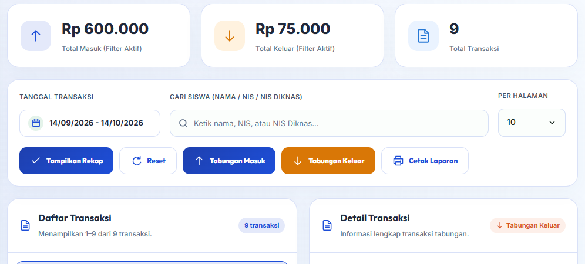
Sebelum mulai
Siapkan tanggal atau identitas siswa yang hendak diperiksa.
Langkah penggunaan
- Buka Riwayat Tabungan, gunakan filter/pencarian yang tersedia.
- Pilih baris untuk membaca rincian tanggal, nominal, jenis mutasi, operator, dan referensi.
- Cocokkan uang masuk/keluar dengan bukti dan saldo siswa.
- Gunakan Cetak Buku Tabungan jika tersedia. Buku menampilkan seluruh mutasi, tidak dibatasi filter tanggal riwayat.
Hasil yang diperiksa
Setiap setoran/penarikan memiliki baris sendiri. Jumlah transaksi dalam rentang tanggal berbeda dari saldo terkini yang berasal dari seluruh mutasi.
Jika mengalami kendala
Jika saldo tampak tidak cocok, samakan siswa/unit dan telusuri mutasi sebelum awal tanggal filter. Jika buku ditolak karena jurnal/saldo tidak sesuai, hubungi pengelola.
Cetak Tabungan
Menyiapkan buku siswa yang berisi sampul, identitas, seluruh mutasi, dan saldo berjalan.
Pengguna: Super Admin, Administrator, Kasir, dan Bendahara TU; tindakan mengikuti hak akun.

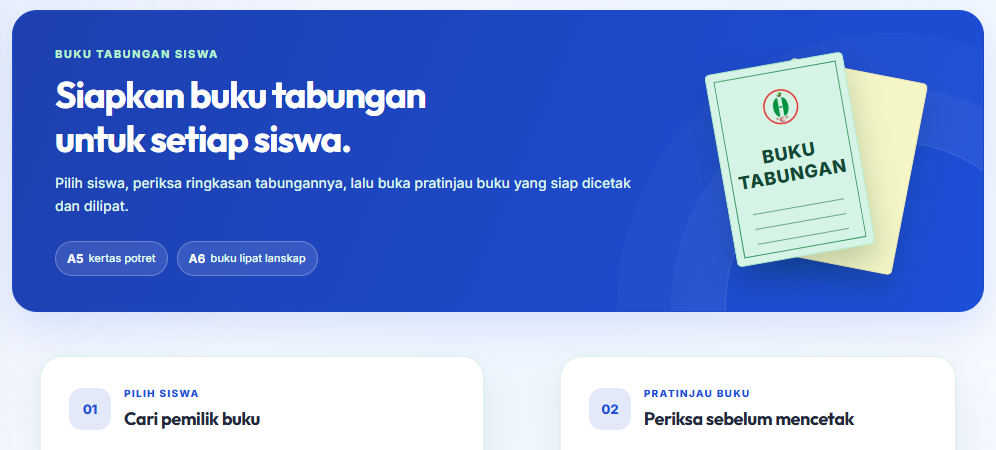
Sebelum mulai
Siapkan printer yang mendukung A5, tentukan siswa, dan periksa saldo/jurnalnya.
Langkah penggunaan
- Buka Cetak Tabungan, pilih kelas bila diperlukan, lalu cari dan pilih siswa.
- Periksa ringkasan siswa/saldo, kemudian buka pratinjau buku.
- Periksa sampul, identitas, urutan tanggal, nomor baris, dan kolom Jumlah. Jumlah berarti saldo berjalan.
- Unduh/buka PDF. Atur A5 potret, skala 100%, cetak dua sisi dengan pembalikan sisi pendek.
- Coba satu lembar untuk memastikan arah duplex printer. Lipat horizontal untuk buku akhir A6 lanskap yang dibuka ke atas.
Hasil yang diperiksa
Halaman tersusun untuk buku lipat; jumlah halaman kelipatan empat. Nomor mutasi berlanjut dan paraf dibiarkan kosong untuk penggunaan fisik.
Jika mengalami kendala
Jangan memilih A5 lanskap atau mengecilkan agar muat. Jika sampul terbalik, periksa sisi pembalikan/arah pemasukan kertas. Cetak fisik perlu diuji pada printer pengguna.
Laporan Transaksi
Membaca rekap keuangan transaksi sesuai periode dan cakupan yang tersedia.
Pengguna: Super Admin, Administrator, dan Bendahara TU.

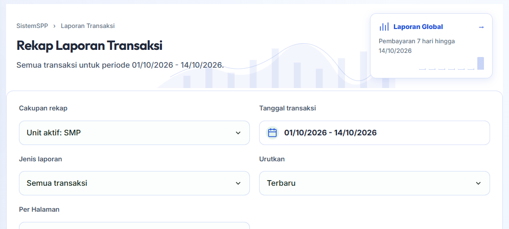
Sebelum mulai
Tentukan apakah yang diperiksa adalah penerimaan, tabungan, atau ringkasan kas.
Langkah penggunaan
- Buka Laporan Transaksi dan pilih tanggal/periode serta filter pada halaman.
- Periksa unit, operator/metode jika tersedia, kemudian terapkan filter.
- Baca ringkasan dan rincian. Pisahkan pembayaran sekolah dari tabungan masuk/keluar.
- Gunakan cetak/PDF/Excel yang tersedia, periksa metadata dan total sebelum menyimpan atau membagikan.
Hasil yang diperiksa
Periode dan total rekap cocok dengan riwayat sumber. Laporan ini berbeda dari katalog Laporan Global yang menyediakan template khusus.
Jika mengalami kendala
Jika angka tidak sesuai, samakan tanggal/unit serta jenis arus kas. Kasir menggunakan Laporan Global; menu Laporan Transaksi tidak tersedia untuk peran tersebut.
Laporan Global: filter, matriks, dan ekspor
Kesembilan laporan dapat dibaca oleh Super Admin, Administrator, Kasir, dan Bendahara TU. Pilih laporan sesuai pertanyaan, bukan hanya berdasarkan bentuk tabel.

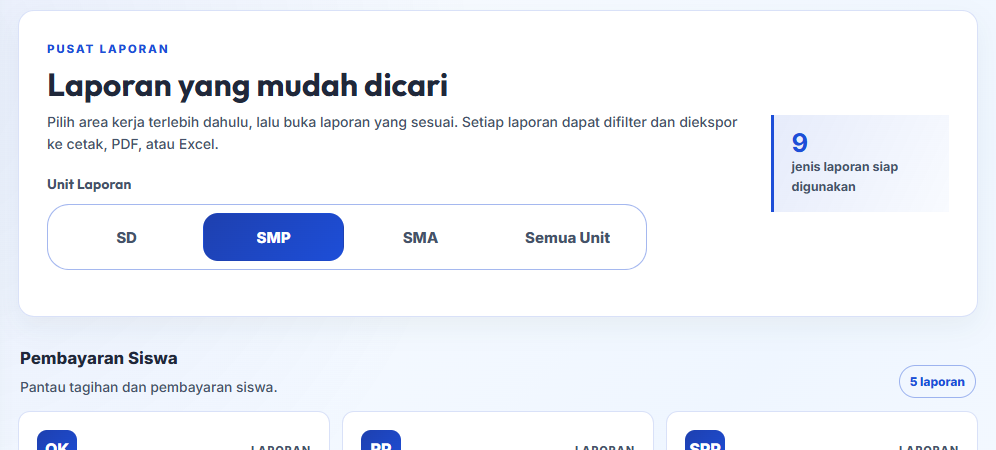
- Pilih Unit Laporan SD/SMP/SMA/Semua Unit, lalu Buka laporan.
- Atur filter yang ditampilkan. Untuk beberapa opsi, pilih checkbox dan Terapkan, kemudian Tampilkan Rekap. Periksa metadata hasil, bukan hanya isian yang belum diterapkan.
- Atur Baris/Halaman dan pencarian. Reset kembali ke kondisi awal. Pergantian unit dapat mengosongkan filter yang khusus unit.
- Geser tabel horizontal untuk seluruh komponen/periode. Identitas siswa/kelas historis menjadi acuan baris. Beberapa rincian dapat memakai baris lanjutan; jangan menganggap semuanya duplikat.
- Baca subtotal kelompok dan total seluruh hasil filter. Nomor/pagination mengikuti baris hasil gabungan; ekspor mencakup hasil filter, bukan hanya halaman layar.
Matriks tetap mempertahankan rincian
Status Pembayaran, Penerimaan Harian, Pembayaran per Item, dan SPP Tahunan menempatkan komponen/periode menyamping. Riwayat Tagihan menggunakan matriksnya sendiri; tabungan dan kas mempertahankan bentuk khusus. Sel — tidak sama dengan Rp0 atau Tidak Ditagihkan.
Pratinjau, cetak, PDF, dan Excel

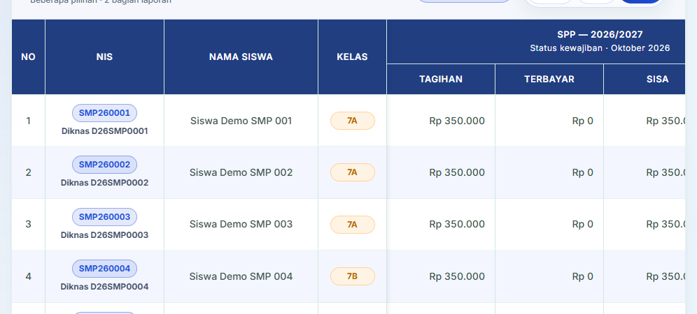
- Tekan PDF atau Excel pada laporan untuk membuka pratinjau tabel interaktif. Gulir sampai kolom paling kanan dan periksa identitas/periode/total.
- Gunakan Cetak untuk membuka PDF siap cetak pada penampil browser. Download PDF menggunakan susunan dokumen yang sama.
- PDF memilih A4 potret/lanskap sesuai kebutuhan. Tabel lebar dilanjutkan pada rentang kolom dengan identitas/header berulang; halaman lanjutan bukan siswa tambahan yang perlu dijumlahkan lagi.
- Gunakan Download Excel, lalu buka XLSX. Identitas/header dibekukan, nominal berupa angka, tanggal bertipe tanggal, dan NIS berupa teks untuk mempertahankan nol awal.
- Periksa Print Preview Excel: A4, orientasi, rentang kolom, dan header berulang. Hindari Fit Sheet on One Page untuk matriks lebar; gunakan pembagian halaman yang disediakan.
Sebelum dibagikan
Cocokkan judul, unit, periode, kategori, status siswa, subtotal dan total. Perhatikan kop serta tanda tangan. Jika transaksi baru masuk setelah pratinjau, buka ulang laporan untuk pemeriksaan terbaru.
Ketika proses belum selesai
Waktu ekspor bergantung jumlah data dan kemampuan PC. Tunggu proses satu kali, jangan membuka banyak unduhan bersamaan. Jika gagal atau sesi kedaluwarsa, masuk kembali dan ulangi filter; jangan mengubah data agar ekspor lebih cepat.
Laporan Status Pembayaran
Memeriksa kewajiban, pembayaran, sisa, dan status siswa per komponen/periode.
Pengguna: Super Admin, Administrator, Kasir, dan Bendahara TU; tindakan mengikuti hak akun.
Sebelum mulai
Pilih Unit Laporan. Filter utama: Tahun Ajaran, Kategori, Bulan Tagihan, Kelas/Rombel, Status, Status Siswa, Baris/Halaman, dan Cari Siswa.
Langkah penggunaan
- Pilih kategori serta periode kewajiban; beberapa kategori tidak memakai bulan dengan cara yang sama.
- Pilih status tunggakan/pembayaran sesuai kebutuhan, lalu Tampilkan Rekap.
- Baca setiap kelompok Tagihan–Terbayar–Sisa–Status. Periksa kategori/periode pada header dan subtotal kelompok.
Hasil yang diperiksa
Tagihan dan pembayaran terkait periode yang sama. Belum Bayar berbeda dari Tidak Ditagihkan; — menandakan tidak ada hasil pada kelompok.
Contoh penggunaan
Untuk memeriksa kewajiban Oktober, pilih Oktober lalu SPP + Komite. Keduanya tampil menyamping, bukan sebagai penerimaan uang Oktober.
Jika mengalami kendala
Hasil kosong perlu diperiksa pada kategori, tahun, bulan, status siswa, dan unit sebelum menyimpulkan semua siswa lunas.
Rekap Penerimaan Harian
Merinci uang pembayaran sekolah yang diterima per siswa dan komponen.
Pengguna: Super Admin, Administrator, Kasir, dan Bendahara TU; tindakan mengikuti hak akun.
Sebelum mulai
Pilih Unit Laporan. Filter utama: Tanggal Transaksi, Kategori, Kelas/Rombel, Operator, Metode, Baris/Halaman, dan Cari Siswa.
Langkah penggunaan
- Pilih satu tanggal atau rentang tanggal penerimaan.
- Pilih komponen/operator/metode yang ingin diperiksa, kemudian Tampilkan Rekap.
- Baca nominal masing-masing komponen dan Total Penerimaan. Perhatikan tanda potongan sesuai transaksi.
- Cocokkan subtotal komponen dengan bukti transaksi dan rekap setoran.
Hasil yang diperiksa
Total mengikuti penerimaan yang lolos filter. Saldo tunggakan tidak dicampur ke uang yang benar-benar diterima.
Contoh penggunaan
Pembayaran September yang diterima 14 Oktober tampil pada penerimaan 14 Oktober.
Jika mengalami kendala
Jika nol, periksa tanggal bayar, operator, metode dan unit; hari tanpa transaksi memang dapat kosong.
Rekap SPP Tahun Ajaran per Kelas
Melihat SPP siswa Juli–Juni untuk satu atau beberapa tahun ajaran.
Pengguna: Super Admin, Administrator, Kasir, dan Bendahara TU; tindakan mengikuti hak akun.
Sebelum mulai
Pilih Unit Laporan. Filter utama: Tahun Ajaran, Kelas/Rombel, Status, Status Siswa, Baris/Halaman, dan Cari Siswa.
Langkah penggunaan
- Pilih tahun ajaran dan kelas/rombel, lalu Tampilkan Rekap.
- Geser tabel untuk membaca bulan Juli sampai Juni beserta total tahun.
- Jika beberapa tahun dipilih, baca masing-masing kelompok tahun. Siswa dengan kelas historis berbeda dapat menempati baris berbeda.
- Bandingkan bulan tertentu dengan Laporan Status Pembayaran pada periode yang sama.
Hasil yang diperiksa
Setiap bulan/status/nominal dibaca dari tahun yang tepat; total tahun tidak dijumlahkan lagi bersama rincian bulannya.
Contoh penggunaan
Pilih 2026/2027 dan kelas 7A untuk pemeriksaan SPP satu kelas selama setahun.
Jika mengalami kendala
Jika tagihan belum tersedia, periksa penempatan dan Master Penerbitan SPP. Tahun draft tidak berarti semua siswa sudah lunas.
Rekap Pembayaran per Item
Memeriksa satu atau beberapa komponen dan periode dengan rincian yang sesuai jenis biaya.
Pengguna: Super Admin, Administrator, Kasir, dan Bendahara TU; tindakan mengikuti hak akun.
Sebelum mulai
Pilih Unit Laporan. Filter utama: Kategori; periode bulanan/tahun tagihan, Tahun Ajaran, atau Tanggal Transaksi sesuai kategori; kelas, status, status siswa, Baris/Halaman, Cari Siswa.
Langkah penggunaan
- Pilih kategori terlebih dahulu dan baca kontrol periode yang muncul.
- Untuk SPP/Komite, tentukan bulan serta rentang tahun tagihan. Komponen tahunan menggunakan tahun ajaran; komponen transaksi memakai tanggal yang ditampilkan.
- Tampilkan rekap, lalu baca rincian bulan, total tagihan/bayar, sisa atau status sesuai bentuk kelompok.
- Periksa header periode setiap kelompok sebelum membandingkan subtotal.
Hasil yang diperiksa
Komponen bulanan mempertahankan rincian bulan dan total; kategori lainnya mempertahankan kolom tagihan/pembayaran/sisa/status yang berlaku.
Contoh penggunaan
Untuk memeriksa SPP September–Oktober 2026, pilih SPP, rentang bulan September–Oktober, dan tahun 2026. Pencarian berada di samping Baris/Halaman.
Jika mengalami kendala
Jangan memakai tanggal penerimaan sebagai periode kewajiban. Setelah berganti kategori, periksa kembali filter yang tampil.
Rekap Transaksi Tabungan Siswa
Menelusuri setiap setoran dan penarikan pada rentang transaksi.
Pengguna: Super Admin, Administrator, Kasir, dan Bendahara TU; tindakan mengikuti hak akun.
Sebelum mulai
Pilih Unit Laporan. Filter utama: Tanggal Transaksi, Kelas/Rombel, Operator, Jenis Mutasi, Baris/Halaman, dan Cari Siswa.
Langkah penggunaan
- Pilih rentang tanggal dan mutasi Semua/Masuk/Keluar.
- Batasi operator atau siswa bila perlu, lalu Tampilkan Rekap.
- Baca tanggal/waktu, identitas, jenis mutasi, Masuk, Keluar, Saldo Saat Ini, operator, serta keterangan.
Hasil yang diperiksa
Masuk/Keluar menunjukkan nominal transaksi. Saldo Saat Ini adalah posisi yang ditampilkan laporan, berbeda dari saldo berjalan pada buku tabungan.
Contoh penggunaan
Pilih mutasi Keluar dan tanggal tertentu untuk mencocokkan uang penarikan yang diserahkan hari itu.
Jika mengalami kendala
Jika hasil kosong, longgarkan tanggal/operator/mutasi. Jangan memakai total mutasi tabungan sebagai penerimaan SPP.
Rekap Saldo Tabungan
Melihat posisi saldo terkini per siswa.
Pengguna: Super Admin, Administrator, Kasir, dan Bendahara TU; tindakan mengikuti hak akun.
Sebelum mulai
Pilih Unit Laporan. Filter utama: Kelas/Rombel, Status Siswa, Status Saldo, Baris/Halaman, dan Cari Siswa; tidak memakai rentang tanggal transaksi.
Langkah penggunaan
- Pilih cakupan siswa aktif, arsip/lulus, atau semua.
- Pilih Semua/Ada Saldo/Saldo Nol sesuai kebutuhan, lalu Tampilkan Rekap.
- Baca saldo siswa dan total sesuai hasil filter. Telusuri melalui Riwayat Tabungan jika diperlukan.
Hasil yang diperiksa
Saldo terkini berasal dari seluruh mutasi siswa; bukan jumlah setoran hari ini.
Contoh penggunaan
Pilih Arsip/Lulus dan Ada Saldo untuk memeriksa saldo siswa yang sudah tidak aktif.
Jika mengalami kendala
Jika siswa tidak muncul, periksa kelas/status/unit. Saldo nol dapat tersembunyi jika filter Ada Saldo dipilih.
Riwayat Tagihan Siswa
Melihat nominal tagihan yang dibuat, dikelompokkan menyamping per komponen.
Pengguna: Super Admin, Administrator, Kasir, dan Bendahara TU; tindakan mengikuti hak akun.
Sebelum mulai
Pilih Unit Laporan. Filter utama: Tanggal Tagihan Dibuat atau Semua tanggal, Kelas/Rombel, Komponen, Status, Status Siswa, Siswa/Halaman, dan Cari Siswa.
Langkah penggunaan
- Pilih satu/beberapa/semua komponen dan tanggal pembuatan tagihan bila diperlukan.
- Tampilkan rekap; baca setiap komponen dan Total Tagihan siswa.
- Periksa rincian serta catatan tanggal yang tampil. Tanggal Uang PSB mengikuti tanggal data siswa dibuat sesuai keterangan laporan.
Hasil yang diperiksa
Laporan menunjukkan kewajiban yang dibentuk, bukan daftar uang diterima. Total tagihan tidak otomatis sama dengan sisa tunggakan.
Contoh penggunaan
Pilih SPP dan Uang PSB untuk membandingkan kewajiban siswa dalam satu tabel.
Jika mengalami kendala
Jika komponen kosong, periksa apakah tagihan sudah diterbitkan dan apakah tanggal pembuatan masuk filter.
Rekap Setoran Kas Harian
Mencocokkan setoran pembayaran sekolah berdasarkan komponen dan metode.
Pengguna: Super Admin, Administrator, Kasir, dan Bendahara TU; tindakan mengikuti hak akun.
Sebelum mulai
Pilih Unit Laporan. Filter utama: Tanggal Transaksi, Operator, dan Metode sesuai kontrol halaman.
Langkah penggunaan
- Pilih hari penutupan kas dan operator/metode bila diperlukan.
- Tampilkan rekap dan baca rincian komponen, ringkasan metode, jumlah transaksi, serta total setoran.
- Cocokkan tunai dengan uang fisik; cocokkan VA/Qris dengan bukti non-tunai.
- Gunakan Penerimaan Harian untuk menelusuri rincian per siswa jika ada selisih.
Hasil yang diperiksa
Subtotal metode/komponen dan total laporan dibaca sebagai ringkasan yang saling menjelaskan; jangan dihitung ganda.
Contoh penggunaan
Pisahkan kasir dan metode Tunai untuk pemeriksaan setoran kasir pada 14 Oktober.
Jika mengalami kendala
Jika selisih, samakan unit/tanggal/operator/metode dan periksa koreksi/penghapusan transaksi.
Rekap Kas Tabungan Harian
Merangkum arus setoran/penarikan tabungan untuk pemeriksaan kas.
Pengguna: Super Admin, Administrator, Kasir, dan Bendahara TU; tindakan mengikuti hak akun.
Sebelum mulai
Pilih Unit Laporan. Filter utama: Tanggal Transaksi dan Operator; tidak memakai filter siswa.
Langkah penggunaan
- Pilih satu hari atau rentang tanggal dan operator.
- Tampilkan rekap, baca Masuk, Keluar, Mutasi Bersih dan jumlah transaksi.
- Telusuri rincian penyebab selisih melalui Rekap Transaksi Tabungan Siswa pada filter yang sama.
Hasil yang diperiksa
Mutasi Bersih = Masuk − Keluar pada periode. Angka ini bukan total saldo seluruh rekening siswa.
Contoh penggunaan
Setoran Rp500.000 dan penarikan Rp150.000 menghasilkan mutasi bersih Rp350.000, walaupun saldo seluruh siswa berbeda.
Jika mengalami kendala
Pisahkan kas tabungan dari setoran pembayaran sekolah sebelum rekonsiliasi.
Surat Laporan ke Orang Tua
Menyiapkan surat tunggakan kepada orang tua/wali berdasarkan kewajiban sampai tanggal yang ditampilkan.
Pengguna: Super Admin, Administrator, Kasir, dan Bendahara TU; tindakan mengikuti hak akun.

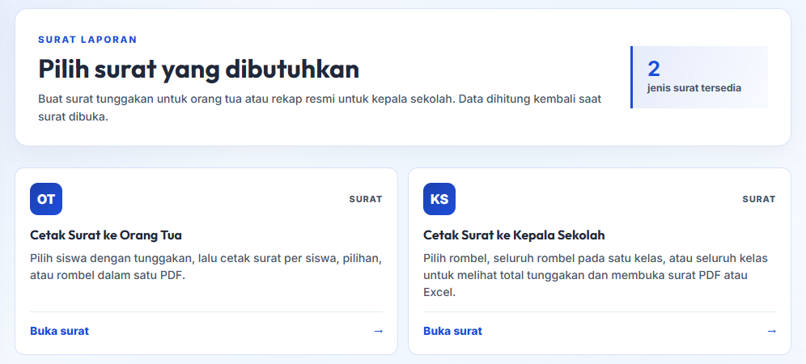
Sebelum mulai
Pastikan identitas, kewajiban, serta data sekolah/penandatangan benar.
Langkah penggunaan
- Buka Surat Laporan lalu pilih surat orang tua.
- Atur Kelas/Rombel, Status Siswa dan Cari siswa, lalu Tampilkan siswa. Daftar berisi siswa dengan tunggakan sampai tanggal yang tertulis.
- Gunakan Cetak Surat untuk satu siswa atau centang siswa lalu Cetak Dipilih. Cetak Kelas/Rombel membutuhkan pilihan kelas/rombel; Cetak Semua Rombel mengikuti cakupan seluruh rombel dan status siswa. Baca jumlah penerima pada masing-masing tombol.
- Lanjutkan penyusunan pesan, periksa surat setiap penerima, lalu cetak/unduh PDF. Setiap siswa mulai pada lembar baru.
Hasil yang diperiksa
Nama penerima dan siswa tidak tertukar; tunggakan sesuai tagihan/periode yang dimaksud.
Jika mengalami kendala
Jika nominal berbeda dari dugaan, bandingkan dengan Laporan Status Pembayaran pada filter yang sama. Jangan mengubah teks nominal untuk menutupi perbedaan data.
Susun pesan dan pratinjau surat orang tua
Menambahkan pesan untuk setiap penerima tanpa mengubah nilai tunggakan sumber.
Pengguna: Super Admin, Administrator, Kasir, dan Bendahara TU; tindakan mengikuti hak akun.

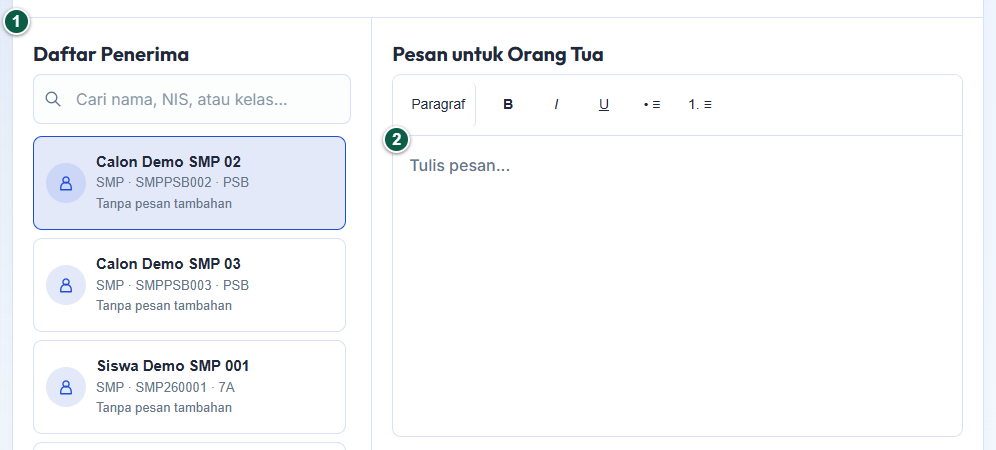
Sebelum mulai
Pilih penerima dari daftar surat. Data surat memakai keadaan saat draf dibuat; draf berlaku dua jam.
Langkah penggunaan
- Pada Susun Surat Orang Tua, pilih siswa di Daftar Penerima. Gunakan pencarian nama/NIS/kelas jika penerima banyak.
- Tulis pesan tambahan, maksimal 2.000 karakter sesuai penghitung. Gunakan Paragraf, Tebal, Miring, Garis bawah, atau daftar bila diperlukan. Pesan tiap siswa dapat berbeda.
- Untuk menyalin pesan ke penerima lain, pilih Terapkan ke Penerima Lain dan periksa sasaran pada dialog. Jangan menganggap seluruh penerima berubah sebelum diterapkan.
- Buka Pratinjau setelah pesan tersimpan. Periksa tiap surat; gunakan Kembali ke penyusunan untuk koreksi.
- Gunakan Cetak, Unduh PDF, atau Buka PDF. Simpan dokumen sebelum draf kedaluwarsa.
Hasil yang diperiksa
Pesan penerima yang benar ikut tercetak; angka tunggakan tetap berasal dari data draf. Aplikasi menyiapkan surat, tidak otomatis mengirim pesan kepada wali.
Jika mengalami kendala
Jika draf kedaluwarsa atau transaksi berubah, pilih penerima dan buat draf baru. Periksa kembali isi sebelum dibagikan; pesan pada draf bukan perubahan tagihan.
Cetak Surat ke Kepala Sekolah
Membuat surat resmi rekap tunggakan per rombel atau keseluruhan pilihan, tanpa daftar nama/NIS siswa.
Pengguna: Super Admin, Administrator, Kasir, dan Bendahara TU; tindakan mengikuti hak akun.
Sebelum mulai
Siapkan tahun/periode, cakupan kelas, status siswa, dan data surat.
Langkah penggunaan
- Buka surat kepala sekolah melalui Surat Laporan atau pintasan yang tersedia. Alur ini berada di luar sembilan template Laporan Global.
- Pilih satu rombel, seluruh rombel pada tingkat tertentu, atau seluruh kelas. Atur status siswa Aktif/Arsip/Semua serta periode yang tersedia.
- Periksa rekap tunggakan per rombel dan total pilihan, kemudian isi/periksa identitas surat dan tanda tangan.
- Buka PDF untuk surat resmi; gunakan Preview Excel/unduhan Excel untuk memeriksa rekap tabel.
Hasil yang diperiksa
PDF dan Excel mencerminkan rekap yang sama. Surat kepala sekolah berisi ringkasan kelas, bukan identitas individual siswa.
Jika mengalami kendala
Jika hasil kosong, periksa unit, kelas, periode, status siswa, dan penerbitan tagihan. Jangan menjumlahkan ulang total bersama subtotal rombel.
Role Management
Mengelola akun petugas beserta peran, unit, password, status, dan penghapusan terbatas.
Pengguna: Super Admin aktif.

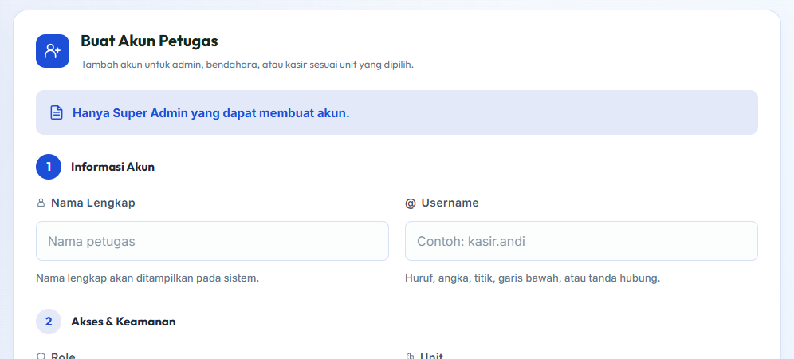
Sebelum mulai
Tentukan peran/unit petugas. Gunakan akun pribadi dan simpan kredensial secara terpisah.
Langkah penggunaan
- Buka Role Management. Untuk membuat akun, isi nama, username, Role, Unit, password dan konfirmasi, lalu Buat Akun Petugas.
- Pada Daftar Akun, gunakan pencarian, filter role/status/unit dan tab peran sesuai kebutuhan.
- Gunakan tindakan ganti password dan aktif/nonaktif yang tersedia. Menonaktifkan tidak menghapus histori petugas.
- Baca penanda Belum memiliki riwayat atau Memiliki riwayat. Penanda mengacu keterkaitan data, bukan riwayat login.
- Jika Hapus Akun tersedia, periksa nama/username pada konfirmasi. Penghapusan permanen hanya untuk akun tanpa riwayat; sesudah konfirmasi, periksa hasil daftar.
Hasil yang diperiksa
Akun memiliki peran/unit yang tepat. Akun dengan riwayat pembayaran, tabungan, tagihan, pengajuan, atau audit di seluruh unit/arsip tidak dapat dihapus; gunakan Nonaktifkan.
Jika mengalami kendala
Akun sendiri, Super Admin aktif terakhir, akun di luar cakupan, atau akun yang baru mendapat riwayat ditolak saat validasi ulang. Cakupan Semua Unit pada menu ini memiliki aturan khusus; ikuti pilihan/tindakan yang tersedia.
Backup harian dan backup manual
Menyimpan cadangan terverifikasi tanpa menimpa database operasional.
Pengguna: Super Admin aktif; mencakup seluruh database SD, SMP, dan SMA.

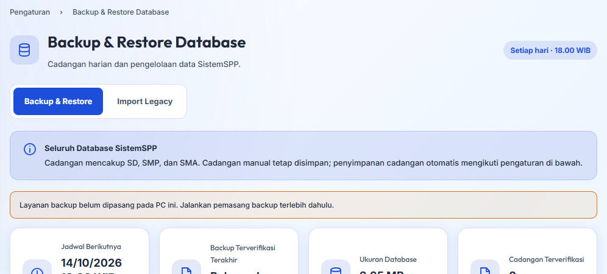
Sebelum mulai
Layanan dan penyimpanan privat harus dipasang pada PC server. Task Windows diperlukan untuk jadwal otomatis; backup manual memiliki pemeriksaan kesiapan tersendiri.
Langkah penggunaan
- Buka Backup & Restore. Periksa status layanan. Jika jadwal Windows belum aktif, buka petunjuk pemasangan dan serahkan kepada pengelola; jangan menyamakan backup manual berhasil dengan jadwal otomatis aktif.
- Pada Pengaturan Backup Harian, isi Jam Backup (WIB) dan Simpan Cadangan Selama (hari) antara 1–365. Pilih Simpan Pengaturan dan periksa pengaturan aktif/Jadwal Berikutnya. Nilai awal formulir 18.00 WIB dan 90 hari.
- Jam baru berlaku untuk jadwal berikutnya, tanpa membuat backup langsung. Untuk kebutuhan segera, pilih Buat Backup Sekarang.
- Pantau Menunggu → Mencadangkan → Memverifikasi → Terverifikasi. Pada Riwayat Backup, cari nama/pembuat atau filter tipe, kemudian Unduh cadangan terverifikasi.
Hasil yang diperiksa
Cadangan hanya layak digunakan setelah Terverifikasi. Cadangan otomatis Terjadwal/Susulan mengikuti retensi; Manual tetap disimpan. Kedaluwarsa tetap ada pada riwayat tanpa unduhan.
Rotasi dan salinan tambahan
Memperpendek retensi tidak langsung menghapus cadangan. Pembersihan otomatis dilakukan setelah backup otomatis baru berhasil diverifikasi; backup baru gagal tidak menghapus cadangan baik sebelumnya. Rotasi menghapus berkas kedaluwarsa, bukan database operasional. Simpan salinan terverifikasi pada media lain untuk risiko kerusakan disk.
Jika mengalami kendala
Tombol terkunci berarti prasyarat belum siap: baca status dan hubungi pengelola. Jika pengaturan berubah oleh petugas lain, muat ulang. Jika PC mati saat jadwal, satu backup susulan dibuat setelah layanan tersedia.
Memeriksa dan mengonfirmasi pemulihan
Mengembalikan seluruh data dan akun SD, SMP, SMA sesuai satu cadangan.
Pengguna: Super Admin aktif; penggantian seluruh database.
Sebelum mulai
Jadwalkan saat transaksi berhenti. Gunakan SQL unduhan cadangan Terverifikasi yang masih tersimpan pada instalasi ini. Pemulihan dari PC lain/skema berbeda memerlukan prosedur pengelola terpisah.
Langkah penggunaan
- Pada Restore Database, pilih satu file .sql maksimal 100 MiB; batas unggahan server juga harus mencukupi. Memilih file belum mengganti database.
- Tekan Periksa File & Tinjau Pemulihan. Tunggu pemeriksaan SQL pada database terpisah hingga Terverifikasi. SQL berubah, asing, atau tidak kompatibel ditolak.
- Periksa nama file. Centang Saya memahami bahwa seluruh data akan diganti, lalu ketik tepat PULIHKAN DATABASE.
- Pilih Pulihkan Database. Sistem menutup akses sementara, menunggu transaksi yang berjalan, dan membuat backup pengaman terverifikasi sebelum penggantian.
Hasil yang diperiksa
Pemulihan hanya diterapkan setelah validasi dan konfirmasi. Semua akun/password ikut kembali ke keadaan cadangan; data yang dibuat setelah cadangan akan diganti.
Jika mengalami kendala
Jika file ditolak, jangan mengedit SQL untuk melewati pemeriksaan. Gunakan cadangan sah pada Riwayat Backup. Pemeriksaan berlaku satu jam; jika kedaluwarsa, periksa ulang.
Progres dan hasil pemulihan
Memastikan pemulihan benar-benar selesai dan memahami tindakan jika pemulihan pengaman diperlukan.
Pengguna: Super Admin pemilik pekerjaan; setelah selesai gunakan akun pada cadangan.

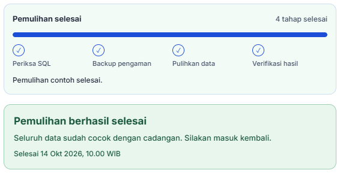
Sebelum mulai
Biarkan server menyala. Jangan menjalankan impor/migrasi lain atau menghapus penanda pemeliharaan.
Langkah penggunaan
- Pantau empat tahap pada progress bar: pemeriksaan SQL, backup pengaman, pemulihan data, dan verifikasi hasil. Bar menunjukkan tahap proses, bukan estimasi waktu.
- Menutup dialog/tab tidak membatalkan pekerjaan. Gunakan Lihat Progres Pemulihan setelah refresh untuk melihat status.
- Tunggu Pemulihan berhasil selesai beserta waktu selesai. Status Menyelesaikan pemulihan masih berarti proses finalisasi belum selesai.
- Pilih Masuk Kembali; sesi lama ditolak setelah database diganti. Gunakan username/password yang berlaku pada tanggal cadangan.
- Periksa identitas sekolah, siswa, pembayaran, tabungan, dan laporan sebelum pekerjaan dilanjutkan.
Hasil yang diperiksa
Hasil berhasil menyatakan data cocok dengan cadangan. Jika muncul Backup pengaman berhasil dikembalikan, pemulihan tujuan tidak berhasil; keadaan sebelum pemulihan telah dipulihkan.
Jika mengalami kendala
Jika Pemulihan Pengaman Tertunda, aplikasi tetap ditutup. Hubungi pengelola untuk memperbaiki gangguan, lalu gunakan Lanjutkan Pemulihan Pengaman. Jangan memaksa membuka aplikasi.
Contoh urutan kerja harian
- Masuk memakai akun sendiri; periksa unit, tanggal, dan kesiapan server.
- Periksa identitas siswa dan kewajiban sebelum menerima pembayaran. Catat pembayaran sekolah melalui Input Pembayaran, tabungan melalui menu terpisah.
- Setelah simpan, cocokkan transaksi pada riwayat dan berikan bukti sesuai hak cetak. Jika salah, gunakan alur koreksi; jangan menerima uang yang sama dua kali.
- Saat tutup kas, samakan tanggal/unit/operator. Cocokkan Penerimaan Harian serta Setoran Kas dengan tunai/non-tunai. Cocokkan Kas Tabungan secara terpisah.
- Periksa pengajuan yang menunggu sesuai peran, simpan laporan yang diperlukan, lalu pastikan cadangan terakhir terverifikasi. Keluar dari akun.
Contoh pemeriksaan akhir hari
Pembayaran sekolah Rp1.000.000, tabungan masuk Rp200.000, tabungan keluar Rp50.000. Penerimaan pembayaran tetap Rp1.000.000; mutasi bersih tabungan Rp150.000. Cocokkan masing-masing pembukuan sebelum membaca ringkasan kas gabungan.
Jika listrik atau jaringan terputus
Periksa riwayat sebelum memasukkan ulang transaksi. Pastikan server/database sudah tersedia. Kegagalan membuka halaman bukan bukti transaksi pasti belum tersimpan.
Persiapan tahun ajaran dan pemeriksaan selisih
Persiapan tahun ajaran
- Pastikan backup terbaru Terverifikasi dan pilih satu unit.
- Periksa kelas/rombel tujuan serta daftar siswa/penempatan asal. Proses kenaikan/kelulusan dengan tahun dan tingkat asal yang benar.
- Siapkan tahun/tarif tujuan SPP dan Daftar Ulang, serta biaya/potongan siswa. Tarif belum siap tidak boleh diganti perkiraan.
- Terbitkan SPP melalui Pilih Siswa dan Daftar Ulang melalui master terkait. Periksa jumlah serta status tagihan.
- Cocokkan Laporan Status Pembayaran, SPP Tahunan, dan Riwayat Tagihan pada tahun tujuan. Lakukan pemeriksaan setiap unit sebelum transaksi.
Urutan mencari selisih
- Samakan unit dan makna periode: tanggal bayar, bulan tagihan, atau tahun ajaran.
- Samakan status siswa, kelas historis, kategori, operator, metode, dan filter lainnya.
- Bedakan total seluruh hasil dari halaman layar, tagihan dari penerimaan, serta saldo terkini dari mutasi periode.
- Telusuri transaksi/rincian dan Riwayat Aktivitas. Periksa apakah perubahan/penghapusan sudah terjadi.
- Jika masih berbeda, simpan filter, identitas/nomor transaksi, dan pesan kesalahan untuk pengelola. Jangan mengubah angka agar laporan terlihat cocok.
Solusi kendala yang sering ditemui
| Kendala | Yang diperiksa / tindakan |
|---|---|
| Aplikasi tidak terbuka | Gunakan alamat server yang benar. Minta pengelola memeriksa Apache/MySQL, jaringan dan layanan PC. |
| Menu atau tombol tidak tersedia | Periksa role, status akun, pemilik transaksi, serta unit. Semua Unit membatasi perubahan. |
| Siswa tidak ditemukan | Cek ejaan/NIS, unit, kelas, status Aktif/Arsip/Legacy, dan filter lain. |
| Tidak ada data pada laporan | Reset atau longgarkan filter; pastikan periode dan tagihan/transaksi sudah tersedia. |
| Nominal SPP ditolak | Periksa sisa satu bulan, tunggakan lebih tua, dan kewajiban Komite bulan yang sama. |
| Perubahan tarif tidak bisa disimpan | Periksa tahun tertutup, versi formulir dan tagihan berbayar. Muat ulang sebelum koreksi. |
| Pengajuan belum mengubah transaksi | Tunggu keputusan Super Admin. Periksa status di menu pengajuan. |
| Buku tabungan tidak terbentuk | Periksa siswa/unit dan kesesuaian saldo dengan seluruh jurnal; hubungi pengelola bila berbeda. |
| PDF/Excel berbeda dari layar yang diingat | Buka ulang laporan dengan filter sama; periksa transaksi baru/koreksi dan seluruh halaman/kolom lanjutan. |
| Backup manual terkunci | Baca status kesiapan layanan dan penyimpanan; hubungi pengelola. Jadwal Windows terpisah dari pemicu manual. |
| Restore belum selesai | Buka progres; tunggu finalisasi. Recovery tertunda memerlukan pengelola, bukan penghapusan lock manual. |
| Sesi berakhir setelah restore | Masuk dengan akun/password dari cadangan yang dipulihkan. |
| Import Legacy gagal | Periksa format .dat, unit, worker dan hasil per baris. Restore SQL bukan pengganti impor Legacy. |
Informasi untuk pengelola
Sampaikan nama menu, waktu WIB, unit, langkah terakhir, pesan kesalahan, dan nomor transaksi bila ada. Jangan mengirim password atau file cadangan ke percakapan umum. Screenshot cukup bagian yang menjelaskan masalah.
Panduan pengelola server
Pemasangan Laragon, koneksi database, jaringan, dan startup layanan dijelaskan pada Panduan PC Yayasan. Pemasangan Task Scheduler serta diagnosis cadangan ada pada Panduan Backup Harian. Manual ini berfokus pada penggunaan menu setelah server disiapkan.